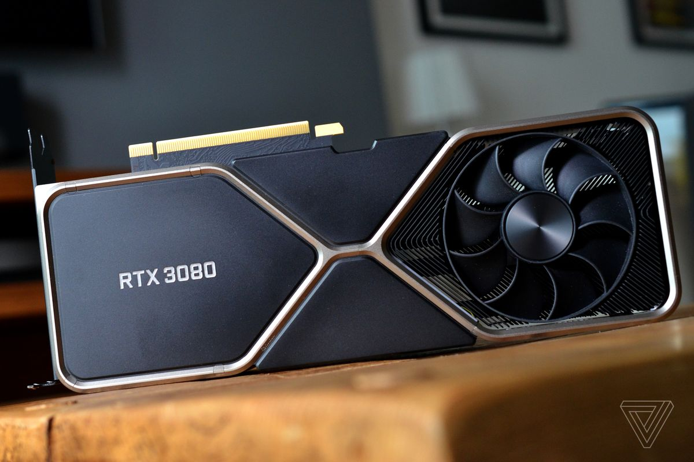

GEFORCE RTX 3080
PLACA DE VÍDEO RTX 3080

Especifícações:
- Processador gráfico (GPU): São 8.704 núcleos CUDA de processamento, capazes de rodar a velocidades de 1,44 GHz no clock padrão, ou acelerar via turbo a até 1,71 GHz. Em termos brutos, a placa teria 29,77 Teraflops (TFLOPS) de performance computacional.
- Memória RAM: 10 GB de GDDR6X, que são ligados ao processador por meio de uma interface com 320 bits de largura. A Nvidia afirma que o processador gráfico e a memória dedicada da placa trocam dados a uma velocidade de 760 GB/s.
- Hardware: Com aceleração de hardware para Ray Tracing, a RTX 3080 vem com 68 núcleos RT. Eles são especializados na tarefa de realizar os cálculos de intersecção dos raios de luz que são simulados por jogos, e representam um ganho substancial diante do total de RT Cores disponíveis na geração anterior.
Observações
- Outra característica relevante do hardware da Nvidia é o suporte ao DLSS (Deep Learning Super Sampling) 2.0. A técnica, que usa Inteligência Artificial, permite que um jogo rode nativamente em uma resolução baixa e tenha sua imagem reconstruída por meio de IA para uma resolução mais alta. Isso permite rodar efeitos mais pesados sem comprometer a resolução final da imagem.
- A tarefa é realizada pelos chamados núcleos Tensor. A RTX 3080 vem equipada com 272 núcleos do tipo, encarregados desse tipo de processamento.
Comentários:
Usuário: Bruno Neemias
Comentário: Essa ai vai rodar até a mãe de quem fez
Data: 20/09/2020
Hora: 12:45PM
Fonte:
TECHTUDO